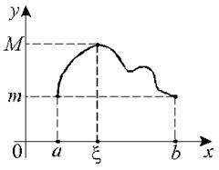

16.1.1. Теорема Ролля (о нуле производной)
Если
1) функция  - непрерывна на
отрезке
- непрерывна на
отрезке  ,
,
- непрерывна на
отрезке ,2) на интервале  существует производная ,
существует производная ,
существует производная ,3) значения функции на концах отрезка совпадают, , то:
Cуществует точка такая, что .
Доказательство:
Так как функция непрерывна
на , то на отрезке существуют наибольшее
 и наименьшее
и наименьшее  значения
функции.
значения
функции.
непрерывна
на , то на отрезке существуют наибольшее
и наименьшее значения
функции.Возможны два случая: 1) и
2) .
Рассмотрим:
, – постоянная, следовательно,
– постоянная, следовательно,;
, следовательно,
хотя бы одно из этих значений достигается внутри ,
так как .
,
так как .
Пусть , .
Так как – наибольшее
значение функции, то при любом знаке .
,
,
переходя к пределу и
рассматривая отдельно правый и левый пределы, получаем
,
.
Эти соотношения совместимы, если .
Доказательство для случая, когда во внутренней точке
отрезка достигается минимум, проводится аналогично.